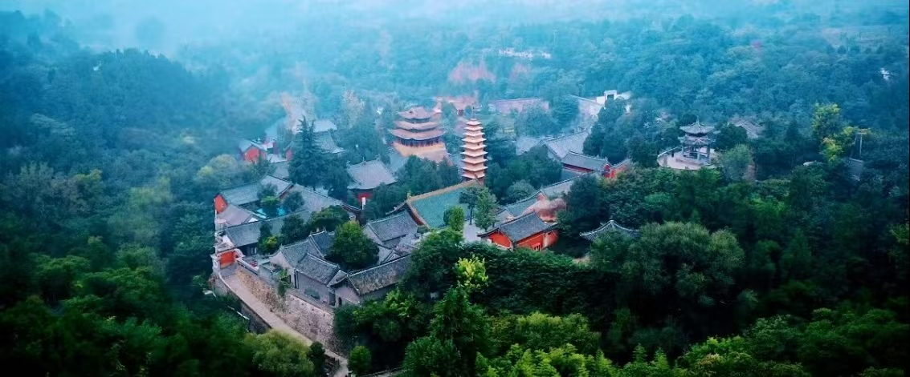
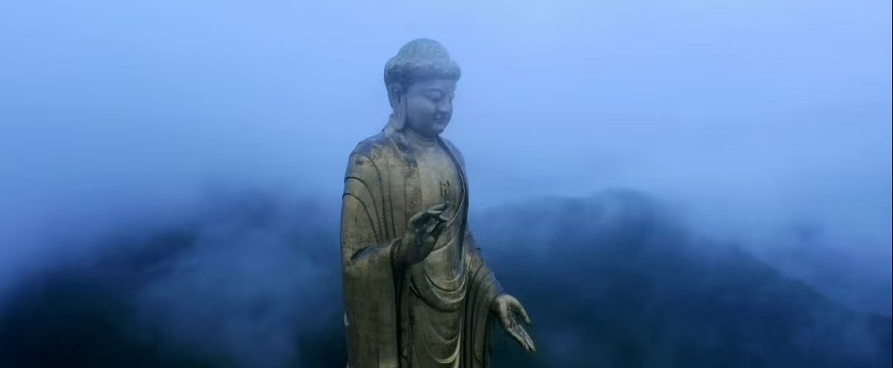

尧山中原大佛景区坐落于河南省平顶山市鲁山县境内，隶属于伏牛山山脉，是国家级5A旅游景区。景区融合浓厚的佛教文化与原生态山林风光，依托千年古寺佛泉寺与巨型中原大佛，成为中原地区极具影响力的祈福观光景区。
中原大佛宏伟壮观，造型庄严，是全球高度领先的户外佛像建筑。景区环境清幽，山林茂密，空气清新，既有深厚的人文底蕴，又有秀丽的自然景色，适合礼佛祈福、休闲度假、登山康养与短途旅行。

📍 地址：河南省平顶山市鲁山县赵村镇中原大佛风景区
🎫 门票：成人常规门票，学生凭学生证可享受半价优惠，老年人、儿童可享受对应减免政策
⏰ 开放时间
全年全天候正常开放，白天为主，淡旺季开放时段略有微调
🚗 交通指南
🍜 当地特色美食
景区入口 → 莲花步道 → 佛泉寺建筑群 → 吉祥钟打卡 → 礼佛广场远眺大佛 → 近距离瞻仰中原大佛 → 山林休闲漫步 → 结束游览返程。
行程节奏舒缓，老少皆宜，既可静心礼佛，又能欣赏山林美景，一日游玩轻松充实。
1. 佛教景区游玩保持安静，衣着大方得体，文明参观。
2. 景区步道较多，建议穿着舒适运动鞋，方便长时间步行。
3. 山区气候多变，早晚温差较大，出行备好薄外套。
4. 尊重宗教习俗，不随意触摸宗教设施，不乱涂乱画。
5. 合理携带饮用水与小零食，补充游玩体力。
6. 节假日人流量大，建议错峰出行，提升游玩体验。
春季万物复苏，草木青翠，空气清新，适合静心祈福踏青；夏季山林凉爽，避暑舒适，远离城市闷热；秋季层林尽染，山色优美，氛围感十足；冬季静谧清幽，白雪映衬古寺大佛，别有一番禅意风光。